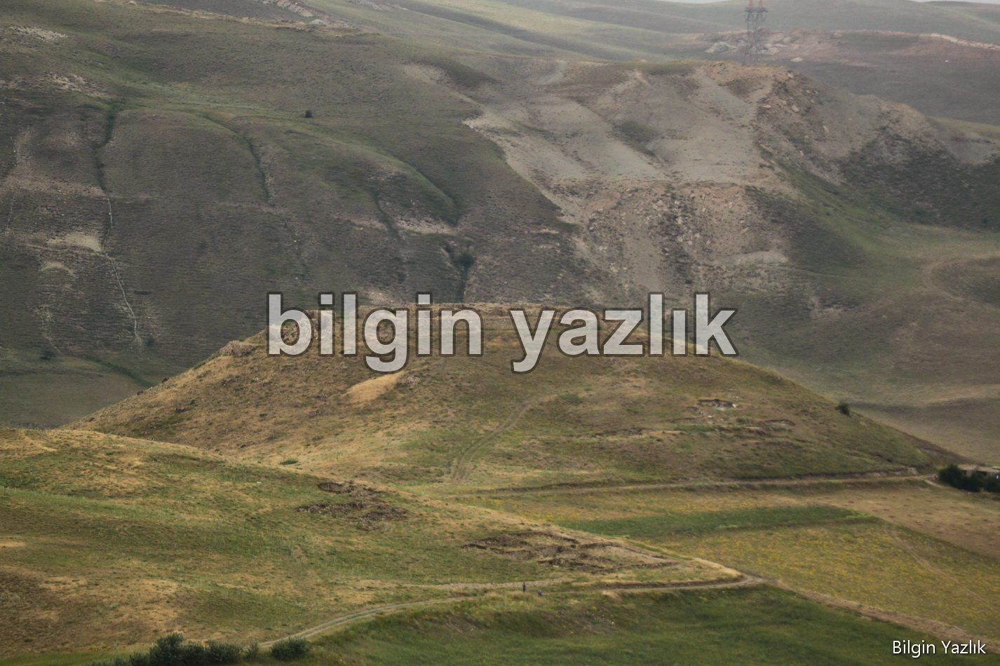
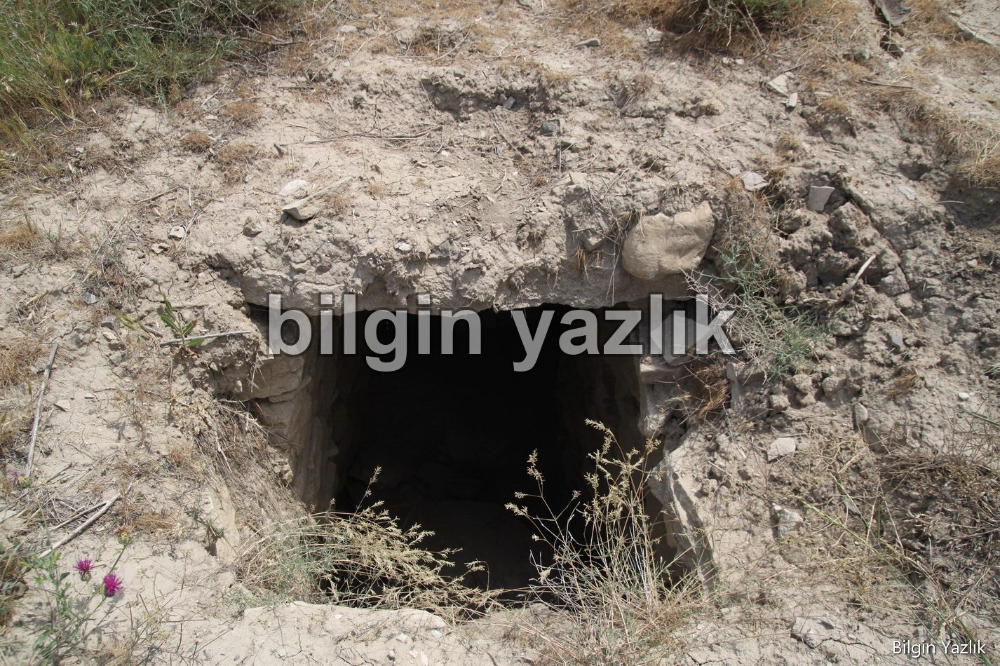
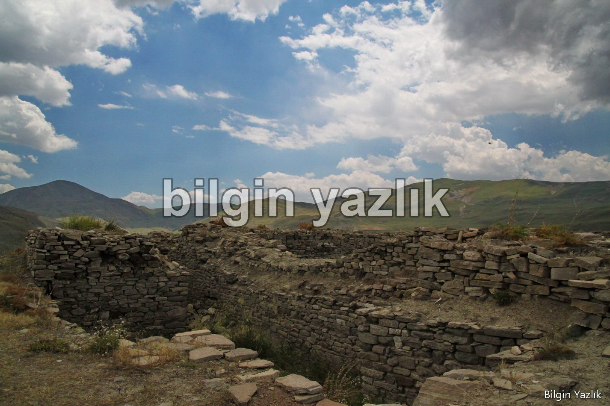
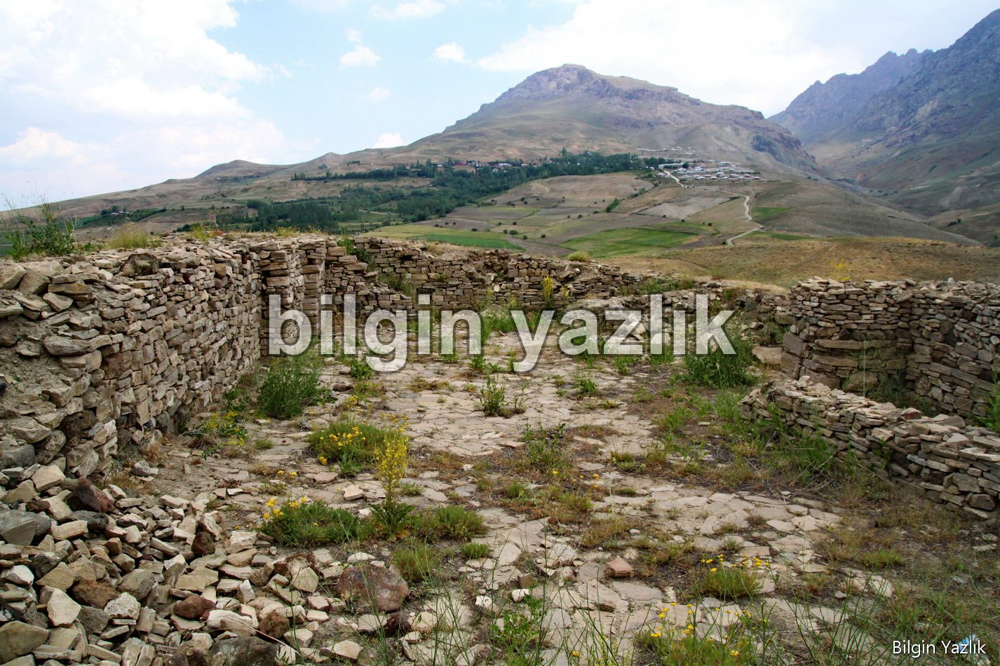

Yonca Tepe Urartu Sarayı
Yedi Kilise ya da Bakraçlı köyünün batısında yer alan bu Urartu Sarayı, şehir merkezinde yaklaşık 10 km mesafede yer almaktadır. Sarayda arkeolojik araştırmalar ve kazılar yapılmıştır. Yonca Tepe Sarayı, Van şehir merkezini kuş bakışı gören bir noktada inşa edilmiştir.
Sarayda yapılan kazılarda ve araştırmalarda eski hububat ve üzüm çekirdekleri bulunmuştur. Bunun da ötesinde tarihte bilinen en eski baston yine burada bulunmuştur.
Araştırmalarda Urartu çivi yazısına hiç rastlanılmamıştır, bu durum araştırmacıları bu sarayın Urartu’ya değil de Urartu’ya tabii bir iç beyliğe ait olabileceğini düşündürtmektedir.
Sarayın kuzey eteklerinde mezar odaları bulunmaktadır.




Bu yazı taliyol arşivinden taşınmıştır. · özgün kayıt